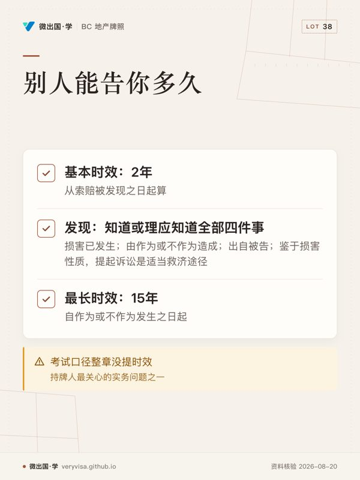

🃏 Flashcards · 3 闪卡 · 3 张 🖼 Slides · 2 幻灯 · 2 页 ✍️ Questions · 13 刷题 · 13 道
RESA 监管·职业责任·伦理 licensing-conduct P1 必拿分 P1 Must score
ZH EN ZH + EN
先看这一章怎么考 First, how this chapter is tested
情景定性题：给出一段持牌人报错面积、漏查产权或私下返佣的案例，考查该行为触发过失（negligence）、过失性虚假陈述（negligent misrepresentation）、欺诈（deceit）还是违反受托义务（fiduciary duty），核心在于辨别心理状态、关系前提与举证责任归属。 Scenario characterization questions: Presenting cases where a licensee misstates floor area, fails to verify title, or provides undisclosed referral fees or rebates, testing whether the conduct triggers negligence, negligent misrepresentation, deceit, or breach of fiduciary duty, with the core focus on identifying state of mind, relationship prerequisites, and the allocation of the burden of proof. 侵权要件与抗辩甄别题：围绕侵入（trespass）与私人妨害（private nuisance）设问，考查「是否须证明损害（actionable per se）」「行为发生在谁的土地上」「物理损害与享用干扰的抗辩差异」以及哪些常见借口（如搬来妨害旁、已尽最大注意）被法院明确否定。 Tort elements and defence screening questions: Focusing on trespass and private nuisance, testing whether an action is actionable per se without proof of damage, on whose land the conduct occurs, differences in defences between physical damage and interference with enjoyment, and which common excuses (such as coming to the nuisance or exercising reasonable care) the courts have explicitly rejected. 责任归属与连带边界题：在开放日访客摔伤或代表（representative）在外闯祸的情景中，考查《占用人责任法》（Occupiers Liability Act）下多重占用人的认定，以及经纪行替代责任（vicarious liability）中「通常雇佣过程」与「独立承包商合同标签」的判断。 Liability allocation and boundary questions: In scenarios involving open house visitor slip-and-fall injuries or misconduct committed by representatives, testing the identification of multiple occupiers under the Occupiers Liability Act, as well as the determination of the ordinary course of employment versus the independent contractor contractual label in brokerage vicarious liability. 最常丢分的陷阱（看到题干信号就警觉） Traps that cost the most marks (watch for the signal in the stem)
通用免责声明护身陷阱 General Disclaimer Shield Trap 题干出现 general disclaimer、believed to be correct but not guaranteed 或持牌人明知数据有误仍照发并援引免责条款。 The question stem mentions a general disclaimer, phrases such as 'believed to be correct but not guaranteed', or a licensee publishing data knowing it is inaccurate and relying on an exculpatory clause. 受托义务举证与后果错位陷阱 Fiduciary Duty Burden and Consequence Confusion Trap 题干问 burden of proof（举证责任）在谁身上、未获利/未影响房价的事项要不要披露，或问违反受托义务后关于佣金的判法。 The question asks where the burden of proof lies, whether matters must be disclosed even if they did not yield profit or affect sale price, or how commission is handled upon a breach of fiduciary duty. 独立承包商免除替代责任陷阱 Independent Contractor Vicarious Liability Exemption Trap 题干强调 independent contractor agreement，或出现下班后办私事（如看电影）途中闯祸 vs 在履行地产职务过程中实施不当行为。 The question stem emphasizes an independent contractor agreement, or contrasts an accident while running personal errands after hours (such as going to a movie) with wrongful conduct committed in the course of real estate duties. 本章考点页：导图、要点表、7 道带逐项解析的练习 →
本章地位 ：这一章回答的是「做错了会怎样」。它是全课唯一把三条互相独立的追责线放在一起讲的地方——
客户在法院告你（民事）、监管者在行政程序里罚你（纪律）、有人替你赔或替你的客户赔（保险与基金）。
三条线各有各的门槛、各有各的时限、各有各的钱袋，其中任何一条都不能替另一条挡刀 。
考试口径定稿于 2020 年，这一章的伤集中在第二条线：它讲的纪律机关已经解散，处分工具只列了三样，
而现行制度里最常砸到人头上的那一样（行政罚款）考试口径一个字都没有。
核实日期：2026-09-05 ，法条口径以 BC Laws 现行合并本（截至 2026-09-01）为准，出处见文末源表。
一、三条线：一件事可以同时触发三种后果 本节回答 This section answers 同一违规为何能同时招致民事诉讼、纪律处分与赔偿基金申请 Why a single contravention can simultaneously trigger civil litigation, disciplinary proceedings, and a claim against the compensation fund
图：三条追责线——一件事可以同时触发三种后果
一个持牌人把面积报错了 400 平方英尺，买家买回去发现，接下来可能同时发生三件事：
三条线的关系是并行 ，不是递进：法院判你不用赔，不代表 BCFSA 不能罚你；BCFSA 已经罚过你，
不代表买家不能再去法院告你。制度这样设计的理由很直白——民事线保护的是个案里的那一个人，
纪律线保护的是整个行业的公众信心 。所以后者不需要有人真的受损才成立：法条把「损害行业声誉、
削弱公众信心」本身就写成了可罚事由。
ℹ️
这一章的两个口径要分开背
本站自测覆盖民事三线 （过失、虚假陈述、受托义务）的构成要件——那部分是共同法（common law），
考试口径与现行一致的规则可以保留，是否及如何考查仍以注册课程为准。给客户讲、以及自己执业时 ，真正天天碰到的是第二条线的
现行数字与程序：谁处分、按哪一档罚、多少钱、多久内能上诉。这一半考试口径已经不能用了。
节末检索小测 · 先别往回翻，凭记忆作答 Quick recall check: answer from memory before scrolling back
A licensee makes a serious error in a residential transaction, but the buyer ultimately resells the property at a profit and suffers no financial loss. If a complaint is filed with the regulator, how does the absence of financial loss affect potential disciplinary proceedings?
某持牌人在一宗住宅交易中犯下严重错误，但买方最终溢价转售该物业，未遭受任何经济损失。若有人向监管机构投诉，未发生经济损失这一事实对潜在的纪律程序有何影响？
a Disciplinary proceedings cannot proceed unless a civil court first establishes that quantifiable damages occurred. ✗ 错误。民事线与纪律线是并行（parallel）而非递进关系，纪律处分无需以法院先行判决存在可量化损失为前提，这是把三条追责线混作先后顺序的陷阱。 Incorrect. Civil litigation and disciplinary proceedings operate in parallel rather than sequentially. Disciplinary action does not require a prior court judgment establishing quantifiable financial loss; assuming otherwise confuses the independent avenues of liability.
b The licensee's errors and omissions insurance will pay the regulatory fine on the licensee's behalf since no civil claim was filed. ✗ 错误。错误与遗漏保险（E&O insurance）只承保民事过失赔偿责任，任何情况下都不承保纪律罚款或行政罚款，这是「保险包付罚款」陷阱。 Incorrect. Errors and Omissions (E&O) insurance only covers civil liability for negligence; it never covers disciplinary or administrative penalties under any circumstances.
c The matter is automatically transferred to the Real Estate Compensation Fund to issue a nominal statutory penalty. ✗ 错误。特别赔偿基金（Real Estate Compensation Fund）仅在托付资金被侵吞、私自转用或欺诈取得时向受害人提供补偿，既不管一般执业错误，也不负责科处纪律罚款。 Incorrect. The Real Estate Compensation Fund only compensates victims when trust funds are misappropriated, wrongfully converted, or fraudulently obtained; it neither covers ordinary practice errors nor imposes disciplinary penalties.
d It may still proceed, since discipline protects public confidence in the industry rather than compensating one person's loss. ✓ 正确。民事诉讼保护个案当事人的经济利益，而纪律线保护整个行业的公众信心（public confidence）；损害行业声誉或构成专业不当行为（professional misconduct）本身即可受罚，不要求有人实际受损。 Correct. Civil litigation compensates individual private losses, whereas disciplinary proceedings protect public confidence in the real estate industry. Actions that damage industry reputation or constitute professional misconduct are sanctionable in themselves, regardless of whether anyone suffered financial loss.
看答案与每个选项的解析 Show the answer and why each option is right or wrong 答案 Answer ：d
二、民事线之一：过失（Negligence） 本节回答 This section answers 过失诉讼的三个必备要件及持牌人注意标准的严苛程度 The three essential elements of negligence and the rigorous standard of care demanded of real estate licensees 本章考题 1 Question 1
三个要件，缺一不可
原告要赢一场过失之诉，必须同时证明三件事：
被告对原告负有注意义务（duty of care） ——凡是被告能够或应当合理预见会受其行为影响的人，
他都对其负有注意义务；此外，即使可预见性边界模糊，法院也会出于政策考量，认定公众有权期待
从事某类活动的人在该活动中谨慎行事。被告违反了应有的注意标准（standard of care） ——标准是「一个理性人在同样情形下会尽到的注意」。
风险越大，标准越高。 损害在法律上不算太遥远（remoteness） ——损害的类型 必须在被告行为时可合理预料。
不可预见类型的损害被视为「太遥远」，不予赔偿。
三者缺一，过失之诉即败。
持牌人被套上的是哪一档标准
BC 法院对持牌人的要求，用一句话概括就是：不是完美，但非常接近完美 。原因不在于职业道德说教，
而在于两个结构性事实——交易金额巨大，而交易对手方往往对不动产交易几乎一无所知，只能依赖你；
并且法律给了持牌行业一块受保护的执业领域，理由正是「这样最能保护公众利益」。
既然是拿这个理由换来的执业资格，法院就按这个理由的标准来要求你。
法院在多个判决里认定持牌人具有「特殊技能」，而这个技能不只是把买卖双方拉到一起，
还包括把要约与买卖合同准备好、完成好 。
✕
免责声明不是护身符
列表里那句人人都写的「此信息据信正确但不作保证」，在法院眼里是一句泛泛的免责声明 ，
曾被判定不足以推翻卖方持牌人对买方负有的注意义务。可能有效的是具体的 免责声明，
例如把它写成「所有测量数据未经独立核实前不应被依赖」。
但没有任何形式的免责声明能保护一个明知信息不准确还照发的人。
现行规则把「过失」直接写成了可罚条文
这是考试口径这一章最大的缺口。共同法上的过失要等到有人起诉、有人证明三要件成立；
而现行《地产服务规则》（Real Estate Services Rules，B.C. Reg. 209/2021）s.34 只有一句话：
提供地产服务时，持牌人必须以合理的注意与技能行事（must act with reasonable care and skill）。
它是一条独立的行政义务，违反它不需要有人打赢官司，也不需要对方是你的客户 ——
监管者认定即可，直接落进行政罚款的 C 档（下文第七节）。
⚠️
「客户」这个词在两条线上不一样宽
共同法上的注意义务可以延伸到非客户（例如对方当事人）；现行规则里，
s.30 那十项义务只对客户 成立，而 s.34 的合理注意与技能义务对所有人 成立。
所以「他不是我的客户」这句话，在受托义务上是抗辩，在注意与技能上不是。
常见的过失形态（法院真的判过的那几类）
对物业价值给出不称职的意见；
未建议买方在要约中加入「以取得融资为条件」（subject to financing）条款；
未披露或未查明供水不足；
未披露关于买方支付能力的重大事实；
界址判断错误；
挂牌方未核实挂牌协议中的信息；
未做产权检索（title search）；
对租金收入给出不完整或误导性的估算。
这张清单的共同点值得记住：没有一条是「说了假话」，全部是「该做的一步没做」。
过失的核心不是撒谎，是省事。
节末检索小测 · 先别往回翻，凭记忆作答 Quick recall check: answer from memory before scrolling back
To succeed in a civil action for negligence against a real estate licensee, which combination of elements must the plaintiff establish before the court?
在对地产持牌人提起的民事过失之诉中，原告必须在法院证明下列哪组要件才能胜诉？
a A duty of care, a breach of the standard of care, and damage of a kind that is not too remote. ✓ 正确。过失三要件缺一不可：被告对原告负有注意义务（duty of care）、违反了理性人在同等风险下应尽的注意标准（standard of care），以及所造成的损害类型在法律上不算太遥远（remoteness）。 Correct. All three elements of negligence are mandatory: the defendant owed the plaintiff a duty of care, the defendant breached the standard of care expected of a reasonable person facing similar risks, and the resulting damage was of a kind not too remote in law.
b A fiduciary contract with the licensee, intentional moral fraud, and a loss certified by the regulator. ✗ 错误。过失（negligence）不以存在受托合同或故意道德欺诈（moral fraud）为前提，也不需要监管机构认证损失；共同法上的注意义务可以延伸至非客户。 Incorrect. Negligence does not require a fiduciary contract or intentional moral fraud, nor does it require losses to be certified by a regulator; the common law duty of care extends to non-clients.
c Direct physical entry onto the plaintiff's land, continuous interference, and refusal to abate the harm. ✗ 错误。直接进入他人土地属于侵入（trespass），持续干扰与除害属于私人妨害（private nuisance），并非过失（negligence）的构成要件。 Incorrect. Direct entry onto another's land constitutes trespass, while continuous interference and abatement relate to private nuisance; neither is an element of negligence.
d A written guarantee of accuracy, reliance by an expert party, and misappropriation of trust funds. ✗ 错误。过失不需要书面准确性保证，依赖方通常是缺乏专业知识的交易当事人而非专家，且挪用信托资金是特别赔偿基金的范畴。 Incorrect. Negligence does not require a written guarantee of accuracy, the relying party is typically a non-expert client or member of the public rather than an expert, and misappropriation of trust funds falls under the compensation fund.
看答案与每个选项的解析 Show the answer and why each option is right or wrong 答案 Answer ：a
三、民事线之二：虚假陈述与欺诈 本节回答 This section answers 专家面对咨询的三条可选路径及非直接知悉信息的转述规范 The three options available to an expert when consulted and proper standards for passing on unverified second-hand information 本章考题 2 Question 2
过失性虚假陈述（Negligent Misrepresentation）
也叫过失性错误陈述，源自英国 Hedley Byrne 一案确立的规则。加拿大最高法院把成立要件列为四项：
存在一项不实的陈述 ；
该陈述是过失作出的 ；
原被告之间存在产生注意义务的特殊关系 ；
原告对该陈述的依赖是合理的 。
当这种依赖导致可预见的损失时，依赖者可以向陈述人索赔。
「特殊关系」怎么产生？当一个有技能的人在其业务过程中，向一个会合理依赖该建议的人提供建议时，
关系就成立了。此时这个有技能的人有三条路 可以走：
拒绝提供该建议或意见；
提供，但明确声明 自己不对其准确性或可靠性负责；
提供，且不加任何限定或免责。
选了第三条路，就必须以合理注意提供该建议，否则要为由此产生的损失负责。
持牌人在法律上被当作地产领域的专家 ，所以这三条路对你是真实存在的选择题，不是修辞。
欺诈与欺诈性虚假陈述（Deceit / Fraudulent Misrepresentation）
与过失性虚假陈述有两处根本不同：
欺诈除了侵权赔偿，还可能叠加合同法上的救济。
🔧
说话之前先问自己：这条信息我是「知道」还是「听说」
你知道门牌号是 123 号，因为你亲眼看过；你以为你知道面积，其实那是业主告诉你的。
没有亲自量过，就不属于你的直接知悉。
必须转述非直接知悉的信息时，正确做法是书面转述并注明信息来源 。
卖方填写的物业披露声明（disclosure statement）能帮你分担一部分责任，
但它不是一副刀枪不入的铠甲 ：如果你知道或应当知道其中某项不准确却照样转述，你仍然要负责。
反过来，你知道某项信息而未充分披露、导致买方取得对卖方的诉因时，卖方也可以回头告你 。
节末检索小测 · 先别往回翻，凭记忆作答 Quick recall check: answer from memory before scrolling back
A seller tells the listing licensee that the house roof was completely replaced recently, though the licensee has not seen any receipts or inspected the roof. When prospective buyers ask about the condition of the roof, what is the proper course of action for the licensee?
卖方告诉挂牌持牌人房屋屋顶最近已全部更换，但持牌人并未见过任何收据，也未亲自检查屋顶。当潜在买方询问屋顶状况时，持牌人的正确做法是什么？
a State as a fact that the roof is newly replaced because a licensee is fully shielded whenever information comes from the property disclosure statement. ✗ 错误。未亲自核实的信息不属于持牌人的直接知悉（direct knowledge）；卖方的披露声明（disclosure statement）虽能分担部分责任，但绝非刀枪不入的护身符，直接当成自己知悉的事实陈述会招致虚假陈述责任。 Incorrect. Information that has not been independently verified is not within the licensee's direct knowledge. Although a seller's property disclosure statement may share some liability, it is not an absolute shield; stating second-hand claims as established facts within direct knowledge creates liability for negligent misrepresentation.
b Pass on the information in writing while explicitly identifying the seller as the source of that information. ✓ 正确。区分「知道」与「听说」是防范过失性虚假陈述（negligent misrepresentation）的关键：转述非直接知悉的信息时，应当以书面形式转述并明确注明信息来源（identify the source）。 Correct. Distinguishing between direct personal knowledge and second-hand information is critical in preventing negligent misrepresentation. When passing on unverified information, the licensee should do so in writing while expressly identifying the source of the information.
c State the roof is newly replaced orally rather than in writing so that the statement cannot form a special relationship. ✗ 错误。口头作出的不实陈述同样可构成过失性虚假陈述（Hedley Byrne 规则），只要专家在业务过程中向合理依赖者提供建议，特殊关系（special relationship）即告成立。 Incorrect. Oral misstatements can equally constitute negligent misrepresentation under the Hedley Byrne principle; whenever an expert gives advice in the course of business to someone reasonably relying on it, a special relationship is established.
d Attach a general blanket disclaimer stating that all marketing remarks are believed to be reliable. ✗ 错误。这是「通用免责声明护身陷阱」；法院曾判定泛泛的「据信正确但不作保证」不足以推翻注意义务，不能替代注明信息来源或具体免责说明。 Incorrect. This falls into the general disclaimer shield trap. The courts have held that a general disclaimer such as 'believed to be correct but not guaranteed' is insufficient to negate a duty of care and cannot substitute for identifying the source or providing a specific disclaimer.
看答案与每个选项的解析 Show the answer and why each option is right or wrong 答案 Answer ：b
四、民事线之三：受托义务（Fiduciary Duty）—— 考试口径讲共同法，现行规则已成文 本节回答 This section answers 受托义务的披露边界、共同法四原则与现行成文十项义务 The boundaries of the duty of disclosure, the four common law principles, and the ten duties now codified in the current Rules 本章考题 3 Question 3
法院总结的四条原则
持牌人对客户负有最高诚信义务 （utmost good faith），也就是受托义务。法院归纳为四点：
持牌人与委托其卖房的人之间，是受信任的、保密的 关系；
持牌人有义务充分披露 其知悉的、可能影响物业价值的一切事实；
成交价格不但要充分，交易本身必须是正当的，且所得价格必须不低于 持牌人本可通过尽职努力
从第三方取得的任何其他价格；
举证责任在持牌人身上 ——要由你来证明上述要求已经完全满足。
第 4 点是这一节的重心：受托义务是全课唯一举证责任倒置 的一格。别的争议里是对方证明你错了；
这一格里是你证明自己对。
法院还把披露义务的范围划得非常宽：它不限于 你从中获利、不限于影响物业价值、也不限于存在利益冲突的情形，
而是包括「与合同标的有关的、可能影响委托人行为的一切事项」。更要紧的是——
持牌人不得自行判断什么会影响委托人的决定 ：只要事项与你受托的交易有关，有任何疑虑，
披露就是化解方式。曾有案例中持牌人与买方私下分佣而未告知卖方，法院据此判持牌人丧失佣金。
另一案中经纪行未把第三方更高报价告知卖方、事后又安排转售，同样丧失佣金。
⚠️
违反受托义务的第一后果不是赔钱，是 拿不到佣金****
上面两案都不是判赔偿，是判「无权收取所主张的佣金」。这一格的经济后果先落在报酬上。
考试口径停在共同法，现行制度已经写成条文
这是本章第二条重要错位。©2020 的考试口径把受托义务作为共同法原则讲 ，
并在案例里援引「规则 s.5-9」「规则 s.3-4」这样的旧条号。
2021-08-01 起，规则整体重编号 （B.C. Reg. 209/2021 取代旧的 Council Rules，2021-08-01 生效，此后多次修订）。
现行对应关系与内容如下：
更关键的是，现行 Rules s.30 把「对客户的义务」写成了十项成文规则 ：
① 以客户最佳利益行事；② 遵照客户的合法指示；③ 只在客户授权范围内行事；
④ 就超出自己专长的事项建议客户寻求独立专业意见；⑤ 保守客户信息；
⑥ 向客户披露其知悉的一切重大信息；⑦ 及时、客观、不偏不倚地转达全部要约；
⑧ 尽合理努力查明客户拟购不动产的相关事实；⑨ 采取合理步骤避免利益冲突；
⑩ 一旦存在利益冲突，书面 、且与服务协议及交易文件相分离 地向客户及时充分披露。
ℹ️
两个口径，分别用在两个场合
考场上 ：受托义务的四条原则、以及「披露义务不以获利或影响价值为限」这一条界限，
就是卷面要的答案，按共同法答。
实务里、给客户讲的时候 ：上面十项每一项都是可直接罚款的条文 （C 档，见第七节），
而且不需要走法院。共同法要打赢官司，规则只要监管者认定。
节末检索小测 · 先别往回翻，凭记忆作答 Quick recall check: answer from memory before scrolling back
While representing a seller, a licensee learns of a nearby development proposal that might influence when the seller chooses to list, even though the licensee stands to gain no personal profit from the proposal. How should the licensee treat this information?
在代表卖方期间，某持牌人得知附近有一项开发提案，该提案可能会影响卖方何时挂牌的决定，但持牌人本人并不会从该提案中获得任何个人利益。持牌人应如何处理这一信息？
a Withhold the information unless the licensee has a direct financial conflict of interest in the development. ✗ 错误。法院明确指出，受托义务（fiduciary duty）下的披露范围不限于持牌人从中获利或存在利益冲突的情形。 Incorrect. The courts have explicitly affirmed that the duty of full disclosure under fiduciary obligations is not restricted to situations where the licensee profits or where a direct conflict of interest exists.
b Decide independently whether the proposal is significant enough to change the property's appraisal value before mentioning it. ✗ 错误。披露义务不限于影响物业价值的事实，更关键的是持牌人不得自行判断（must not take it upon themselves to decide）什么会影响委托人的决定。 Incorrect. The duty of disclosure is not confined to facts that directly alter property values; critically, licensees must not take it upon themselves to decide whether information would influence a client's decision.
c Disclose it fully, since a fiduciary must reveal any matter tied to the deal that might influence the principal's conduct. ✓ 正确。无论是共同法受托义务原则还是现行《地产服务规则》（Rules s.30(f)），持牌人都必须向客户充分披露与合同标的有关、可能影响委托人行为的一切重大信息，有任何疑虑时均应披露。 Correct. Under both common law fiduciary principles and current Real Estate Services Rules s.30(f), a licensee must fully disclose all known material information that relates to the subject matter of the contract and could influence the client's actions, resolving any doubt in favour of disclosure.
d Report the development proposal only to the managing broker and wait until after completion to inform the seller. ✗ 错误。对客户的披露必须及时（timely），拖到成交后才告知完全违背了最高诚信义务（utmost good faith）。 Incorrect. Disclosure to a client must be prompt and timely; waiting until after closing to reveal material information directly violates the duty of utmost good faith.
看答案与每个选项的解析 Show the answer and why each option is right or wrong 答案 Answer ：c
五、替代责任与经纪行、管理经纪的法定监管义务 本节回答 This section answers 经纪行替代责任的边界及现行规则下管理经纪与代表的监督上报义务 The limits of a brokerage's vicarious liability, and the supervision and reporting duties of managing brokers and representatives under the current Rules
共同法：替代责任（Vicarious Liability）
经纪行要为其持牌人在通常雇佣过程中 （in the ordinary course of employment）实施的过失或其他
不当行为负责。这条共同法原则叫替代责任。受害方可以同时起诉行为人与雇主；
但若不当行为不发生在通常雇佣过程中 ，雇主不负责。
界线在「是不是在履行职务」而不是「有没有用公司的东西」：员工下班开公司的车去看电影撞了人，
法院认定不构成替代责任，由员工独自承担。而反过来，即使是欺诈或殴打这类行为，
只要发生在雇佣过程中，雇主也可能被判替代责任。
法院把 representative（代表）当作雇员对待 ——这一点对本课读者非常要紧：
即使你与经纪行签的是独立承包商协议，在替代责任这一格上，法院看的是职务关系，不是合同标签。
考试口径没有的那一半：经纪行与管理经纪的法定义务
替代责任是事后 的分担规则。现行制度另外加了一层事前 的法定监管义务，考试口径这一章完全没有：
《地产服务法》（RESA）s.7.1 ：经纪行必须确保——非本经纪行持牌人不得培训或监督本行的
managing broker、associate broker 与 representative。
规则 s.28 ：管理经纪（managing broker）必须积极参与本经纪行的管理；必须确保业务合规地开展；
必须确保对相关持牌人及为经纪行履职的雇员有足够程度的监督 ；一旦知悉可能构成专业不当行为、
有失身份的行为、或不当/过失执业的情形，必须采取合理步骤处理 。
规则 s.29 ：associate broker 与 representative 必须让管理经纪知悉自己在提供哪些服务、
必须及时回应管理经纪的询问、必须确保对自己的雇员有足够监督，
并在知悉可能属于 s.28(2) 所指的行为时立即通知管理经纪 ——包括自己的行为在内 。
✕
「我自己捅的娄子我自己扛」在现行规则下是第二个违规
s.29(5) 要求你在知悉可能构成不当行为时立即通知管理经纪，而条文明写这包括你本人的 行为。
瞒着不报，等于在原来的问题之上再叠一条独立可罚的违规（B 档）。
同理，规则 s.23 还要求持牌人在受到任何监管处分、被作出与地产服务/挪用/欺诈/背信有关的
法院判令、被刑事指控或定罪、或进入破产程序时，主动书面通知 Superintendent 。
节末检索小测 · 先别往回翻，凭记忆作答 Quick recall check: answer from memory before scrolling back
Under the current Real Estate Services Rules, what must a representative do upon realizing that their own conduct in a transaction may constitute professional misconduct or negligent practice?
根据现行《地产服务规则》，当一名代表（representative）意识到自己在某宗交易中的行为可能构成专业不当行为或过失执业时，必须怎么做？
a Attempt to resolve the issue privately with the client first and notify the managing broker only if a lawsuit is filed. ✗ 错误。这是「自己捅的娄子自己扛」陷阱；规则 s.29(5) 要求知悉可能构成不当行为时立即通知管理经纪，瞒着不报本身就会叠加一条独立可罚的 B 档违规。 Incorrect. This falls into the trap of trying to conceal one's own mistake. Rules s.29(5) mandates notifying the managing broker immediately upon becoming aware of potential misconduct; concealing it constitutes an independent Category B contravention.
b Apply directly to the Financial Services Tribunal within 30 days for a confidential undertaking. ✗ 错误。金融服务仲裁庭（FST）是针对纪律决定提起上诉的机构，而承诺（undertaking）是向 Superintendent 作出，均非代表在发现自身潜在不当行为时的内部上报程序。 Incorrect. The Financial Services Tribunal (FST) hears appeals against regulatory decisions, and undertakings are submitted to the Superintendent; neither is the appropriate internal reporting procedure when a representative discovers their own potential misconduct.
c Hire an outside trainer from another brokerage to supervise and correct the transaction file. ✗ 错误。《地产服务法》（RESA s.7.1）明确规定，经纪行必须确保非本经纪行持牌人不得培训或监督本行的代表、副经纪或管理经纪。 Incorrect. RESA s.7.1 explicitly mandates that a brokerage must ensure no licensee outside the brokerage trains or supervises its representatives, associate brokers, or managing brokers.
d Promptly notify their managing broker, as the duty to report suspected misconduct explicitly includes the licensee's own conduct. ✓ 正确。现行《地产服务规则》s.29(5) 明文规定，副经纪与代表在知悉可能属于 s.28(2) 所指的不当或过失执业行为时，必须立即通知管理经纪（managing broker），且条文明确包含其本人的行为。 Correct. Current Real Estate Services Rules s.29(5) expressly requires that an associate broker or representative must immediately notify their managing broker upon becoming aware of conduct that may constitute improper or negligent conduct under s.28(2), explicitly including their own actions.
看答案与每个选项的解析 Show the answer and why each option is right or wrong 答案 Answer ：d
六、考试口径整章没提的一格：别人能告你多久 本节回答 This section answers 《时效法》发现后 2 年与最长 15 年的双层起算规则 The two-tier starting rule under the Limitation Act: 2 years from discovery, and an ultimate period of 15 years
©2020 的考试口径这一章从头到尾没有讲时效。而这恰恰是持牌人最关心的实务问题之一——
一笔 2019 年的交易，2026 年还会不会回头找你？
现行《时效法》（Limitation Act，SBC 2012, c.13）给两个数：
两个数一起看才有意义 ：2 年是从买家意识到问题那天起算，不是从成交日起算——
一个 2019 年报错的面积，买家 2025 年转售时才发现，他的 2 年可能到 2027 年才结束；
但 15 年的最长时效替你封死了尾巴（隐瞒行为另有例外，会中止起算）。
ℹ️
三条线的时限是三个不同的数，别混
民事起诉：发现后 2 年 / 最长 15 年 （时效法 s.6、s.21）。
特别赔偿基金申请：2 年 ，从下列最早者起算——申请人知悉损失发生之日、责任经纪行牌照被
紧急令暂停或吊销之日、Superintendent 公告可能发生损失之日（RESA s.61(2)）。
RESA 项下刑事性质的告发（offence） ：事实发生后 2 年，或 Superintendent 出具证书时
自其知悉之日起 2 年（RESA s.120）。
而纪律程序本身，法条没有设一般性的时效上限 ——这是三条线里最容易被想当然的一格。
节末检索小测 · 先别往回翻，凭记忆作答 Quick recall check: answer from memory before scrolling back
In 2019, a licensee negligently misstates the floor area of a property. The buyer purchases the property in 2019 but only discovers the discrepancy in 2025 when preparing to resell. Under the BC Limitation Act, how are the basic and ultimate limitation periods applied?
2019 年，某持牌人过失报错了一处物业的面积。买方于 2019 年买下该物业，直到 2025 年准备转售时才发现这一出入。根据 BC《时效法》，基本时效与最长时效如何适用？
a The claim is barred because the basic two-year limitation period expired two years after the 2019 closing date. ✗ 错误。这是把基本时效的起算点错当成「成交日」的常见误区；《时效法》（Limitation Act）s.6(1) 的 2 年基本时效是从索赔「被发现（discovered）」之日起算，而非交易完成之日。 Incorrect. This reflects the common mistake of dating the basic limitation period from closing day. Under Limitation Act s.6(1), the basic 2-year limitation period runs from the day the claim is discovered, not the transaction completion date.
b Two years from the 2025 discovery (to 2027), but never past 15 years from the 2019 act or omission. ✓ 正确。《时效法》s.6(1) 规定基本时效为自发现之日起 2 年（故 2025 年发现后可诉至 2027 年），同时受 s.21(1) 自作为或不作为发生之日（2019 年）起 15 年最长时效（ultimate limitation period）的封顶限制。 Correct. Under Limitation Act s.6(1), the basic limitation period is 2 years from discovery (permitting an action until 2027 for a claim discovered in 2025), subject to the 15-year ultimate limitation period under s.21(1) running from the date of the act or omission (2019).
c The buyer has 15 years from the date of discovery in 2025 to file a civil lawsuit. ✗ 错误。15 年是最长时效（s.21(1)），从行为发生之日（2019 年）起算；从发现之日起算的是 2 年基本时效（s.6(1)），选项把两个数字的起算点颠倒了。 Incorrect. The 15-year period is the ultimate limitation period under s.21(1) running from the act or omission (2019), whereas the period running from discovery is the 2-year basic limitation period under s.6(1); this option reverses the two starting points.
d There is no statutory limitation period for civil negligence claims against licensed real estate professionals. ✗ 错误。没有一般性时效上限的是 RESA 项下的行政纪律程序（discipline proceedings），民事过失诉讼严格受《时效法》2 年与 15 年规则的约束。 Incorrect. It is regulatory disciplinary proceedings under RESA that have no general statutory limitation cap; civil negligence actions are strictly bound by the 2-year and 15-year limitation rules under the Limitation Act.
看答案与每个选项的解析 Show the answer and why each option is right or wrong 答案 Answer ：b
七、纪律线：2026 年谁在处分你、按什么档罚 本节回答 This section answers 纪律决定人、递进式纪律四出口、A–F 六档行政罚款与上诉规则 The disciplinary decision-maker, the four progressive discipline outlets, the six categories (A-F) of administrative penalties, and the appeal rules
谁在做决定
考试口径写的是「Real Estate Council of BC 是行业的纪律机关」。这一句现在整句作废。
现行 RESA 第 4 部分（Part 4 — Discipline Proceedings and Other Regulatory Enforcement）
从投诉、调查、听证、命令到公布，每一处的决定人都是 Superintendent（地产总监） ，
其职位由 BCFSA 董事会依《Financial Services Authority Act》任命（RESA s.2.1），
可以书面转授权。Real Estate Council 在现行 RESA 条文中已无位置。
什么行为会被追
RESA s.35(1) 逐项列举了构成专业不当行为 的情形：违反本法/条例/规则；违反牌照的限制或条件；
构成 wrongful taking 或 deceptive dealing（不当取得/欺骗性交易）；在执业中显示不称职；
不配合调查；不遵守 Superintendent 的命令或自己作出的承诺；在依法提交的文件中作出虚假或误导性陈述。
s.35(2) 另设有失身份的行为 （conduct unbecoming）：Superintendent 判断该行为
违背公众最佳利益、削弱公众对地产行业的信心、或使行业蒙羞。
⚠️
「不称职」和「不配合」本身就是违规
很多人以为纪律线只管坏心眼。s.35(1)(d) 把在执业中显示不称职 单列为专业不当行为，
s.35(1)(e) 把不配合调查 单列。也就是说：原本的错误可能只值一封警告信，
拖着不交材料却能把事情升级成一条独立的、按天累加罚款的违规（E 档）。
四条出口
BCFSA 采用递进式纪律 （progressive discipline），一次调查有四种出口：
告诫函（letter of advisement） ——认定确有违反规则，但以书面警告加纠正指引结案。
它不是「没事了」：后续再有投诉时，它是会被考虑进去的 。行政罚款（administrative penalty） ——介于告诫函与正式执法之间的中间档，见下表。同意令（consent order） ——收到纪律听证通知后，持牌人可以在开庭时间前向 Superintendent
提交书面提案，同意由其直接作出某项命令而不开庭（RESA s.41）。
同意令不是私下和解 ：它产生正式的纪律命令，会被公布，并进入你的公开纪律记录。纪律听证 + 纪律命令 （RESA s.40、s.42、s.43）。另有紧急情形命令 （s.45）：
Superintendent 若认为完成调查或听证所需时间会损害公众利益，可以不经通知、不给陈述机会
直接暂停牌照或加限制。
行政罚款：考试口径零字，实务里最常见
法律框架在 RESA s.56–57 ，具体档位与金额在规则 s.26–27 。
s.56(2) 设定了法定天花板：单笔行政罚款最高 $100,000。
自 2024-07-01 起，六个档次覆盖 RESA、条例与规则合计 107 个条文。
🔧
把 C 档记熟，因为它就是本章前半部分
第二、三、四节讲的过失、注意与技能、受托义务的十项，在现行制度里全部落在 C 档 ：
首次 $5,000、再次 $10,000，每一条违规单独计。
也就是说，本章前半部分的共同法内容不只是「可能被告」，同时是「可能被罚」。
行政罚款的程序（RESA s.57）：Superintendent 发出通知 → 你有权要求陈述机会 →
若 30 天内不要求 ，视为承认违规且罚款到期应付；若要求了，陈述后 Superintendent 可以撤销、
维持，或撤销罚款转而发出纪律听证通知。已经生效的行政罚款有一个对被罚人有利的效果：
该事项不得再另行提起本部分下的其他程序 ，且未经本人同意，该罚款事实不得用于相关民事诉讼。
纪律命令：十项工具与两个上限
纪律听证认定成立后，Superintendent 必须依 s.43(2) 作出一项或多项命令：训诫；停牌
（定期或至条件满足）；吊销牌照；对牌照加限制或条件；要求停止或从事特定业务活动；
要求修读指定课程；在指定期间内或条件满足前禁止申请牌照 ；要求支付执法开支；
要求支付纪律罚款 ；以及要求另行支付不超过该次违规所收报酬金额 的附加罚款。
纪律罚款的上限（RESA s.43(2)(i)） ：
经纪行或前经纪行：每次违规最高 $500,000 ；
其他情形（个人持牌人）：每次违规最高 $250,000 。
s.43(2.1) 明写：该罚款可就每一次违规分别科处 ——不是一案一罚。
执法开支 另算（RESA s.44 + 条例 s.4.4，现行费率）：调查每名调查员 $100/小时 ；
审计员为 BCFSA 常雇的 $150/小时 、其他 $400/小时 ；法律服务由 BCFSA 常雇律师
$150/小时 、其他律师 $400/小时 ；听证每日或不足一日的行政开支 $2,000 ；
普通证人每日 $50、专家证人 $400/小时；以及实际发生的差旅与其他合理开支。
✕
罚款和执法开支都不在 E&O 的保障范围里
E&O 保的是「因过失性错误或遗漏而产生的赔偿责任」。纪律罚款、行政罚款、执法开支
是你自己掏。 这也是为什么一次听证的实际代价往往远大于罚款票面数字。
公布与上诉
纪律命令必须公布 （RESA s.47），方式是登在 Superintendent 的网站上，也可以另择方式；
决定同时上传到公开判例库并长期保留。同意令与纪律命令一样会公布并进入公开纪律记录。
上诉走 Financial Services Tribunal（FST，金融服务仲裁庭） （RESA s.54）：
被处分人可以在决定作出之日起 30 天内 提交上诉通知，并缴纳 $850 的上诉费。
投诉人无权上诉 BCFSA 的决定。
另有一条 2021 年加入的工具：承诺（undertaking，RESA s.53.1） ——
Superintendent 可以在不经调查也不经听证 的情况下，接受持牌人或未持牌人的书面承诺
（遵守条件、履行义务、停止某行为），承诺对当事人具有约束力，且可以附带承担 BCFSA 的相关开支。
节末检索小测 · 先别往回翻，凭记忆作答 Quick recall check: answer from memory before scrolling back
Under the current Real Estate Services Act (RESA), after the Superintendent issues a discipline order following a hearing, who has the right to appeal that decision to the Financial Services Tribunal (FST) and under what requirements?
根据现行《地产服务法》（RESA），在地产总监（Superintendent）经听证作出纪律命令后，谁有权按什么要求向金融服务仲裁庭（FST）提起上诉？
a Either the disciplined licensee or the original complainant may appeal within two years without paying a fee. ✗ 错误。投诉人（complainant）无权对 BCFSA/Superintendent 的决定提起上诉，且上诉期限是 30 天而非 2 年，并须缴纳 $850 上诉费。 Incorrect. A complainant has no legal standing to appeal a decision of the Superintendent/BCFSA; furthermore, the appeal window is 30 days rather than 2 years, and requires an $850 filing fee.
b The Real Estate Council of BC must review the order first before any appeal to the court is permitted. ✗ 错误。Real Estate Council of BC 在 2021 年机构合并后已不存在于现行法条中，纪律决定由 Superintendent 作出并直接上诉至 FST。 Incorrect. The Real Estate Council of BC ceased to exist in statutory law following the 2021 regulatory restructuring; all disciplinary orders are made by the Superintendent and appealed directly to the FST.
c The disciplined person, within 30 days with an $850 fee; the complainant cannot appeal. ✓ 正确。依据 RESA s.54，被处分人可在决定作出之日起 30 天内向金融服务仲裁庭（Financial Services Tribunal, FST）提交上诉通知并缴纳 $850 上诉费；投诉人无权上诉。 Correct. Under RESA s.54, a licensee subject to a disciplinary order may file a notice of appeal with the Financial Services Tribunal (FST) within 30 days of the decision date, accompanied by the $850 filing fee; complainants have no right of appeal.
d A licensee who signs a consent order may appeal within 30 days to keep the order off the public discipline record. ✗ 错误。同意令（consent order，RESA s.41）是持牌人主动提议并同意不经开庭直接作出的正式命令，一经作出同样必须公布并记入公开纪律记录，不能借上诉转为私下保密和解。 Incorrect. A consent order under RESA s.41 is a formal disciplinary order proposed and agreed to by the licensee without a full hearing; once issued, it must be published on the public discipline registry and cannot be turned into a private settlement through appeal.
看答案与每个选项的解析 Show the answer and why each option is right or wrong 答案 Answer ：c
八、开放日与看房：占用人责任（Occupiers Liability Act） 本节回答 This section answers 开放日主持人的占用人身份、统一合理注意标准与防损措施 The occupier status of an open house host, the common duty of reasonable care, and loss-prevention measures
为什么这一格归你
1974 年以前，占用人对访客的注意标准按访客类别（invitee / licensee / trespasser / 儿童）分档，
经常出现一个人同时属于两类的困境（既是儿童又是擅入者该按哪一档？）。
BC 立法机关 1974 年通过《占用人责任法》（Occupiers Liability Act，OLA），
用一条统一的合理注意标准取代了这套共同法分类 。
现行 OLA（RSBC 1996, c.337，现行文本截至 2026-09-01）：
s.1 定义「占用人」 ：对场所有实际占有，或 对场所状况、场所内活动、以及获准进入者
负有责任并有控制权的人；同一场所可以有不止一个占用人 。s.3(1) 义务 ：占用人须尽在一切情形下合理的注意，使进入场所的人及其财物
在使用该场所时合理安全（也包括未亲自进入者放在场所内的财物）。s.3(2) 义务及于三件事：场所的状况 、场所内的活动 、第三人在场所内的行为 。s.3(3) 自甘风险 ：对自愿承担的风险不负注意义务，但仍不得故意制造危险加害 ，
也不得罔顾他人安全或财物完整地行事 。s.3(3.1)/(3.2)/(3.3) ：擅入并实施或意图实施犯罪行为的人视为自愿承担全部风险；
进入农业用地、林业/牧业用地、空置或未开发地、林地或荒野、有标识的私人道路、
有标识的休闲步道、公用事业通道等类别场所而擅入、或为免费休闲活动而进入的，同样视为自甘风险。s.3(4) ：OLA 的标准不免除 其他法律对特定人群施加的更高注意标准。
照 s.1 的定义，可能同时是占用人的有 ：登记业主、租客、看房人（house-sitter）、
主持开放日的地产持牌人 、物业经理、以及分层产权法团。
当你被交付一处物业用于开放日或看房时，你就可能成为该法下的占用人，并对访客的伤害负责。
s.3(4) 指向的两部法：一部条号没变，一部变了
考试口径举了两个「更高标准」的例子，其中一个的条号已经作废：
⚠️
引用旧条号在两个场合有两种后果
卷面上 ，考的是「OLA 不排除其他法律的更高标准」这条原理，条号本身不是得分点。
实务里、尤其是给客户或同行写东西时 ，引一个已经不存在的条号会让整段建议失去可信度——
而且现行法在编排上把业主、雇主、主承包商、供应商的义务分列，条文内容也随之调整过。
涉及条号一律回现行合并本核对，不要照抄 2020 年前的考试口径与攻略 。
开放日的实际动作
法院不要求你把房子改造成绝对安全的场所——曾有访客在开放日走出前门时于高差步道摔伤，
法院认定占用人已尽 OLA 的注意标准，理由是高差明显、且沿路的竖向花箱给了使用者合理的视觉提示；
判词并指出占用人有权假定访客会对自身安全尽合理注意 。
但「有权假定」不是「不必准备」。开放日的标准动作：
建议业主移走并妥善保管 贵重物品（不是藏起来），并就损坏或失窃（含开放日之后发生的）
签署免责/知情文件；
收起全部私人照片；
全程陪同访客 ，不放任其自行走动；事先排查绊倒、楼梯跌落、门前积雪结冰等风险并采取措施；
查看并记录访客的驾照与车牌号。
做了这些不等于不会被告，但做了这些，责任往往可以避免 。
节末检索小测 · 先别往回翻，凭记忆作答 Quick recall check: answer from memory before scrolling back
During a weekend open house hosted by a listing licensee, a visitor trips on a clearly visible step along the front walkway that is bordered by tall planters providing visual cues. How does the Occupiers Liability Act (OLA) apply to this situation?
在挂牌持牌人主持的周末开放日期间，一名访客在前门步道一处明显可见的台阶处绊倒，该步道沿线设有高花箱提供视觉提示。《占用人责任法》（OLA）如何适用于这一情形？
a The OLA imposes strict liability requiring the occupier to make the premises absolutely accident-proof for all visitors. ✗ 错误。OLA s.3(1) 要求的是「在一切情形下合理的注意（reasonable care in all the circumstances）」，使场所合理安全，法院并不要求占用人将物业改造成绝对不发生意外的场所。 Incorrect. OLA s.3(1) requires 'reasonable care in all the circumstances' to ensure premises are reasonably safe; the courts do not require an occupier to make premises completely accident-proof.
b Only the registered homeowner can be an occupier under the OLA, so the hosting licensee owes no statutory duty. ✗ 错误。按 OLA s.1，同一场所可以有多个占用人（more than one occupier），被交付场所用于主持开放日的持牌人对场所状况及访客负有控制权，同样可能构成占用人。 Incorrect. Under OLA s.1 there can be more than one occupier; a licensee entrusted with premises to host an open house exercises control over premises conditions and entrants, and can be deemed an occupier alongside the owner.
c The owner and the licensee may both be occupiers and may assume visitors take reasonable care where a step is obvious and marked. ✓ 正确。业主与主持开放日的持牌人均可成为 OLA 下的占用人；法院判例确认，当台阶高差明显且花箱提供了合理视觉提示时，占用人已尽合理注意义务，且有权假定访客会对自身安全尽合理注意。 Correct. Both the homeowner and the open house hosting licensee can qualify as occupiers under the OLA. Case law confirms that where a step change is visible and planter boxes provide a clear visual prompt, the occupiers have fulfilled their duty of reasonable care and are entitled to assume visitors will exercise reasonable care for their own safety.
d The standard of care depends on whether the visitor is classified at common law as an invitee, licensee, or trespasser. ✗ 错误。BC 省 1974 年通过 OLA 的核心目的，就是用一条统一的合理注意标准取代了 1974 年以前按 invitee / licensee / trespasser 分档的旧共同法分类。 Incorrect. The primary objective of enacting the OLA in BC in 1974 was to replace the pre-1974 common law categories of invitee, licensee, and trespasser with a single comprehensive standard of reasonable care.
看答案与每个选项的解析 Show the answer and why each option is right or wrong 答案 Answer ：c
九、两个与土地有关的侵权：侵入与私人妨害 本节回答 This section answers 侵入与私人妨害的构成特征、谁有权起诉、有效抗辩与自助救济 The key features of trespass and private nuisance, who may sue, valid defences, and self-help remedies 本章考题 4 Question 4
这两个侵权在考试口径这一章里篇幅不小，考点也稳定（几十年没变），实务上主要落在物业经理 身上。
侵入（Trespass）
定义 ：不法进入他人土地、不法滞留其上、或将某物不法置于其上。三个特征：
故意（intentional） ——行为须是行为人能控制的自愿行为。被人扔到邻地上的那个人不构成侵入，
扔他的人构成。直接（direct） ——须是直接行为，不是行为的间接后果。往邻地扔石头是侵入；
放任烟囱年久失修塌到邻地上不是侵入（那是妨害/过失的领域）。本身即可诉（actionable per se） ——无须证明发生任何损害 即可起诉，
这是它与本章其他侵权最大的不同。
三种类型：不法进入 （哪怕只越界一点点，哪怕以为是自己的地——不知情不是抗辩）；
不法滞留 （合法进入后，进入权终止仍不离开，例如被店主请出的顾客在合理时间内未离开）；
不法置物 （把东西放到别人地上；曾有快递公司误送到错误地址被判侵入，放错了也不是抗辩 ）。
侵入可发生在地表之下与土地上方的空域——曾有招牌越入邻地空域 8 英寸被判侵入，虽无实际损害。
谁能告 ：一般只有侵入发生时实际占有 土地的人。已出租的业主只有在侵入对
「复归权益（reversion）」造成永久损害时才能起诉。受保护的是占有 ，不是所有权；
仅有使用权而无占有（如地役权人、寄宿者）不足以提起侵入之诉。
持牌人里最可能卷入侵入之诉的是物业经理。
救济 ：损害赔偿（计量标准是物业价值的减损额 ，不是修复重置成本；恶意或严重侵犯时可加
惩罚性赔偿）；禁制令 （injunction，最适合用在没有实际损害但要求停止的情形，违反构成藐视法庭）；
自助 （self-help，须先要求对方离开、且不得使用超过必要限度的武力，超限即构成殴击并须赔偿）。
抗辩 （除去为除害而进入外，其余都可归为「对方有某种进入权」）：合法行使通行权；
占用人明示或默示的许可（走正常通道去找屋主谈话通常有默示许可，
但无视「谢绝推销」标志进去推销就变成侵入 ）；有权占有者的和平进入；
业主或执达员为行使商业租约上的扣押权而进入；为除害而进入；以及法定授权进入。
私人妨害（Private Nuisance）
定义 ：土地的所有人或占用人不合理且实质地 干扰邻地的合理使用与享用。
起诉人须是对邻地有占有或占用权益的人。与侵入不同，妨害的关注点不在行为人的行为本身，
而在受害方土地所受的损害或其财产权受到的干扰 。
典型形态：烟、异味、有毒气体、噪音、热、震动、电磁干扰，以及细菌、动物、水的逸出。
与侵入的四点对比 （这张表就是考点）：
两类损害的判法不同 ：涉及使用与享用受干扰 时，由法院按「一切情形下是否合理」判断，
要看地区性质（大城市可接受的噪音水平高于乡村）、行为人是否有加害意图、
以及以普通理性人 为标准（原告异常敏感不予考虑，除非被告刻意利用该敏感）。
但涉及实际物理损害 时，合理性不再是抗辩 ——哪怕行为完全合理，造成的物理损害仍须赔偿。
谁负责 ：制造妨害者当然负责；此外，明知或理应知道自己土地上存在妨害却不采取措施除去的
占用人 也要负责。租赁关系中，租客作为占用人负首要责任 ，即使妨害不是他造成的也须设法除去；
业主一般不负责，除非他自己制造了妨害、或把物业出租用于必然产生妨害的用途（此时业主与租客同负责）。
妨害由无从控制的第三人（如擅入者）造成、或占用人不知情且不应知情的，不负责。
有效抗辩只有两条 ：法定授权（且必须是该获授权行为不可避免 的结果——
仅有牌照或授权不够，若该行为可以在不造成妨害的方式下完成，就必须那样做）；
以及损害轻微、无足轻重 。
法院明确否定的四五种「理由」 ：「你自己搬到妨害旁边来的」（volenti non fit injuria）；
「这事对多数人有好处」；「找不到更合适的地方干这件事」；
「我已经尽了最大的注意与技能」或「这事不可能不产生妨害」；
「不是我一个人造成的，是几家凑起来才有的」（每一家都要为自己那一份负责 ）。
除害（abatement） 是妨害独有的救济，无须经法院，例如剪掉伸过界的邻家树枝，但有三条限制：
须是防止妨害的合理方法；不得危及他人生命或财产；除去他人土地上的妨害前须先通知占用人 ，
除非危险迫在眉睫、情况紧急。
🔧
妨害对交易服务持牌人的实际含义是 估值****
两套一模一样的房子，一套在成熟社区、一套紧邻养鸡场，气味构成妨害并直接影响后者的价值。
交易服务持牌人要看见妨害对价格的影响（并注意它可能构成须披露的重大隐蔽瑕疵，见 Rules s.59）；
物业管理持牌人则可能需要代表业主对制造妨害的人提起诉讼。
节末检索小测 · 先别往回翻，凭记忆作答 Quick recall check: answer from memory before scrolling back
A commercial tenant leases a ground-floor unit from a landlord. A neighbouring shop installs an overhanging sign that projects eight inches into the airspace directly above the leased courtyard without causing any physical damage. Who is generally entitled to sue in trespass, and must actual damage be proven?
某商业租客向业主承租了一间底商单元。隔壁店铺安装了一块悬挑招牌，伸入所租庭院正上方空域 8 英寸，但未造成任何物理损坏。通常谁有权提起侵入之诉，且是否必须证明实际损害？
a Only the landlord holds title to the airspace, and they must prove measurable financial loss before suing. ✗ 错误。侵入（trespass）保护的是土地的「实际占有（possession）」而非所有权；在租赁期间，若未对业主的复归权益（reversion）造成永久损害，应由实际占有的租客起诉，且侵入无须证明损害。 Incorrect. Trespass protects actual possession of land rather than title ownership. During a tenancy, unless permanent injury is done to the landlord's reversionary interest, the action must be brought by the tenant in possession, and trespass requires no proof of damage.
b The tenant in actual possession may sue for trespass into the airspace without having to prove any damage occurred. ✓ 正确。侵入可发生在土地上方空域（airspace），保护的是实际占有者（因此由在租租客起诉）；且侵入「本身即可诉（actionable per se）」，即使招牌越界 8 英寸未造成任何实际损害也可起诉（并可申请禁制令 injunction）。 Correct. Trespass can occur within the airspace above land and protects the party in actual possession (allowing a tenant in possession to sue). Furthermore, trespass is actionable per se; extending an overhanging sign 8 inches into neighbouring airspace is actionable without proof of actual damage, entitling the occupier to seek an injunction.
c Neither party can sue in trespass because overhanging signs are indirect interference governed exclusively by negligence. ✗ 错误。将招牌直接伸入邻地空域属于直接的不法置物/进入，判例明确认定越入邻地空域 8 英寸构成侵入（trespass）。 Incorrect. Projecting a sign directly into neighbouring airspace constitutes direct unauthorized entry or placement of an object; case law has expressly established that an 8-inch airspace intrusion constitutes trespass.
d Any customer or boarder using the courtyard may sue in trespass as long as they give prior notice of abatement. ✗ 错误。仅有使用许可而无排他占有的顾客或寄宿者（boarder）无权提起侵入之诉，且除害（abatement）是私人妨害（private nuisance）的救济方式。 Incorrect. Mere licensees or boarders who lack exclusive possession cannot maintain an action in trespass, and abatement is a self-help remedy for private nuisance rather than trespass.
看答案与每个选项的解析 Show the answer and why each option is right or wrong 答案 Answer ：b
十、保险与基金：两个钱袋，各管一半 本节回答 This section answers E&O 保险与特别赔偿基金的赔付边界、停牌机制与申请上限 The coverage boundaries of E&O insurance and the compensation fund, the suspension mechanism, and the claim caps 本章考题 5 Question 5
BC 有两个法定的钱袋，很多人把它们混成一个。分界线只有一条：你是不小心，还是不老实。
E&O：强制参保，且欠费第二天停牌
E&O 是依 RESA 成立的特别法人，1988 年设立，当时 BC 地产行业选择了自保（self-insurance）模式；
它是非营利机构，把持牌人缴的分摊费集中起来，用于抗辩与必要时的赔付。
目前为全省约 30,000 名持牌人 提供保障，覆盖交易、分层管理、出租物业管理各类别的代表、
管理经纪与副经纪以及经纪行。RESA 要求每一名 BC 地产持牌人参加，分摊费随每两年一次的
牌照续期缴纳 ，并每年收到基金与赔付情况的报告。
法律给了这套安排一个非常硬的执行手段：RESA s.104(3)——持牌人未按期缴清分摊费或
应由其承担的免赔额，其牌照自次日起停止效力（suspended） ；s.104(4)：全额付清（连同利息）后
自动恢复 。这是全法里少数不需要任何听证、不需要任何裁量就直接生效的停牌情形。
E&O 不是监管者 ：发牌与纪律都是 BCFSA 的事，与 E&O 无关。反过来，公众若认为持牌人有过失，
应先通知该持牌人及其管理经纪，由持牌人自己向 E&O 报案 ——报案义务在持牌人身上，不在公众身上。
ℹ️
保额、免赔额与两年一次的分摊费金额，本篇不给数字
这三个数只在 E&O 面向持牌人的密码保护页面 与其发给持牌人的通讯里公布，
公开网页上查不到。没有一手源就不写数字 是本课的纪律；
在你拿到牌照并登入该系统之前，任何来自第三方网站或中文攻略的保额数字都不要采信。
赔偿基金：赔的是「钱不见了」
「可赔损失」（compensable loss）的定义非常窄且非常具体（RESA s.60）：必须是钱 ，
必须是持牌人（或其经纪行的高管/董事/控股股东/合伙人、雇员、独立承包关系人）
就地产服务从委托人处持有或收取 的钱，且是被侵吞/私自转用、被故意不交付或不入账、或被欺诈取得的。
持牌人主张自己应得的报酬不算；规则第 9 部分豁免情形下的行为不算。
申请程序（RESA s.61）：书面向 Superintendent 提出，附上行为详情，若依据法院判决则附判决副本。
时限 2 年 ，从下列最早者起算：① 申请人知悉损失发生之日；② 若责任经纪行的牌照在造成损失的行为
之后曾被紧急情形令暂停或吊销，则为该暂停/吊销之日；③ Superintendent 公告可能发生可赔损失之日。
上限的两个数（条例 s.5.1、s.5.2）：单一申请人 $200,000 ；
围绕同一责任经纪行的全部申请合计 $1,000,000 ——超出时基金按比例分摊 给各合格申请人。
另有一格常被忽略：为完成交易或防止损失而支付的款项，单笔交易上限 $100,000 （条例 s.5.3）。
✕
一个经纪行卷走三户人的钱，上限是共用的
$1,000,000 是同一责任经纪行 的总额，不是每人 $1,000,000。
大额挪用案里，实际到手的往往远低于个人上限——这正是为什么信托账户合规
（谁签字、什么时候入账、负数余额要立即报告）在纪律线上被摆在那么重的位置。
节末检索小测 · 先别往回翻，凭记忆作答 Quick recall check: answer from memory before scrolling back
What happens to a licensee's real estate licence if the licensee fails to pay their required Errors and Omissions (E&O) insurance assessment or deductible on time?
如果持牌人未按期缴清其应缴的错误与遗漏（E&O）保险分摊费或应由其承担的免赔额，其地产牌照会怎样？
a The licence is automatically suspended on the next day, and is automatically reinstated once the full amount plus interest is paid. ✓ 正确。依据 RESA s.104(3) 与 s.104(4)，未按期缴清 E&O 分摊费（assessment）或应承担的免赔额（deductible），牌照自次日起停止效力（suspended），全额付清（连同利息）后自动恢复。 Correct. Under RESA s.104(3) and s.104(4), if a licensee fails to pay an E&O assessment or deductible when due, the licence is automatically suspended on the following day, and is automatically reinstated once the full outstanding amount plus interest is paid.
b The licence remains active until the E&O Insurance Corporation holds a formal disciplinary hearing. ✗ 错误。E&O 保险公司不是监管机构，不举行纪律听证；且 RESA s.104(3) 规定逾期未缴次日即直接停牌，无须任何听证或裁量。 Incorrect. The E&O Insurance Corporation is not a regulator and does not hold disciplinary hearings; under RESA s.104(3), licence suspension occurs automatically the next day without any hearing or administrative discretion.
c The unpaid assessment is deducted from the Real Estate Compensation Fund and billed as a Category A administrative penalty. ✗ 错误。特别赔偿基金（Real Estate Compensation Fund）与 E&O 是两个独立的钱袋，不会替持牌人垫付欠费。 Incorrect. The Real Estate Compensation Fund and E&O insurance are distinct, independent funds; the compensation fund never advances money to pay a licensee's unpaid insurance assessments.
d The licensee may continue trading under the managing broker's personal coverage for a 30-day grace period. ✗ 错误。法律没有 30 天宽限期或借用管理经纪保障的规定，欠费次日牌照即自动停效，停牌期间执业属于严重违规（F 档）。 Incorrect. There is no 30-day grace period or provision allowing a licensee to shelter under a managing broker's coverage; licence suspension takes effect automatically the next day, and providing real estate services while suspended is a severe Category F contravention.
看答案与每个选项的解析 Show the answer and why each option is right or wrong 答案 Answer ：a
十一、考试口径（©2020）vs 2026 现行：本章逐条对照 本节回答 This section answers 旧版考试资料条号、纪律机构名称与 2026 年现行法规的精准换算 Converting the section numbers and disciplinary body names in the old exam materials to the 2026 current rules
ℹ️
上表第 1 行与第 4 行合起来是本章的「读考试口径说明书」
读到 Real Estate Council，读成 BCFSA/Superintendent；读到形如「s.5-9」「s.3-4」的短横线条号，
一律当作旧编号处理 ，回现行规则找对应条文。短横线是 2021 年前旧规则的编号特征，
现行规则用的是连续的阿拉伯数字（s.30、s.34、s.53、s.57.1）。
节末检索小测 · 先别往回翻，凭记忆作答 Quick recall check: answer from memory before scrolling back
In the 2020 course manual, cases discussing a licensee's duty to disclose a personal interest when acquiring or disposing of real estate cite old Council Rule s.5-9. Under the current Real Estate Services Rules (in force since August 1, 2021), which section governs this disclosure and which administrative penalty category applies to a breach?
在 2020 版课程手册中，讨论持牌人本人或关联人取得或处分不动产时须披露权益的案例援引了旧规则 s.5-9。在现行《地产服务规则》（2021-08-01 起生效）下，哪一条文规范该披露义务，且违反该条属于哪一档行政罚款？
a Rules s.53, a Category C matter ($5,000 for a first contravention, $10,000 for a later one). ✓ 正确。2021-08-01 规则整体重编号后，旧规则 s.5-9（交易中权益的披露）对应现行 Rules s.53（须在任何协议订立前以批准表格披露），违反 s.53 属于行政罚款 C 档（首次 $5,000、再次 $10,000）。 Correct. Following the rule renumbering on August 1, 2021, former Rule s.5-9 (disclosure of interest in trade) corresponds to current Rules s.53 (requiring disclosure on an approved form prior to entering any agreement). A contravention of s.53 is classified as a Category C administrative penalty ($5,000 for a first contravention, $10,000 for a subsequent contravention).
b Rules s.28, which falls under Category A administrative penalties ($1,000 for a first contravention). ✗ 错误。Rules s.28 是管理经纪（managing broker）的监督义务，而 A 档适用于经纪行记录、交付协议等低风险基础事项。 Incorrect. Rules s.28 governs the supervisory duties of managing brokers, while Category A applies to basic administrative matters like brokerage records and service agreement delivery.
c Rules s.119, which is enforced exclusively by the Real Estate Council through a letter of advisement. ✗ 错误。s.119 是旧《工人赔偿法》的作废条号（现行对应 s.25），且 Real Estate Council 已解散。 Incorrect. Section 119 is the repealed section number under the former Workers Compensation Act (corresponding to s.25 in the current consolidated Act), and the Real Estate Council of BC has been dissolved.
d Rules s.23, which carries a daily accumulating penalty of $1,000 per day under Category E. ✗ 错误。Rules s.23 是持牌人受到监管处分、相关法院判令、刑事指控/定罪或破产时向 Superintendent 通知的义务；E 档（每日加 $1,000）针对的是不配合调查或账目审查。 Incorrect. Rules s.23 requires notifying the Superintendent upon facing regulatory sanctions, court orders, criminal charges/convictions, or bankruptcy; Category E ($1,000 accumulating daily) targets failure to cooperate with investigations or audits.
看答案与每个选项的解析 Show the answer and why each option is right or wrong 答案 Answer ：a
十二、柜台上怎么做 本节回答 This section answers 执业中防范过失、受托违约、纪律加罚与开放日风险的实操铁律 Fundamental practical rules for preventing negligence, breach of fiduciary duty, escalated disciplinary penalties, and open house liabilities
给信息之前（防过失与虚假陈述）
每说一条关于物业的事实，先分类：我亲自核实过 / 别人告诉我的 。
属于第二类的，书面转述并写明来源 ；不能核实的，建议客户聘请能核实的专业人士。
用具体 的免责说明（例如：全部测量数据未经独立核实前不应被依赖），不用那句通用的「据信正确但不作保证」。
买方一侧无法确认卖方所提供信息时，考虑在合同中加入把准确性风险移回卖方的条件条款。
明知不准确的信息，加任何免责说明都无效 ——正确动作是不发布，或先更正。
代表客户时（防受托义务违反）
对着规则 s.30 那十项逐条自查，尤其是⑦ 转达全部要约 与⑨⑩ 利益冲突的避免与书面披露 。
自己或关联人要买/卖标的物业时，在任何协议成立之前 用批准表格向对方披露（规则 s.53）。
冲突披露必须书面、且与服务协议和交易文件分开 ——夹在合同里签的不算数。
记住举证责任在你身上：没有书面记录的披露，等于没有披露过。
牌照与合规（防纪律线）
受到任何监管处分、相关判决、刑事指控或定罪、破产程序，主动书面通知 Superintendent （规则 s.23）。
知悉可能构成不当行为的情形——包括自己的 ——立即通知管理经纪（规则 s.29(5)）。
收到调查请求按时配合 ：拖延本身是 E 档，按天累加。
E&O 分摊费随两年一次的续牌按时缴清：逾期次日牌照自动失效 （RESA s.104(3)）。
收到纪律听证通知后，同意令是一条现实出路，但要清楚它照样公布、照样进纪律记录 。
不服决定的，30 天 内向 FST 提交上诉通知并缴 $850 。
开放日与看房（防占用人责任）
建议业主移走贵重物品并签署文件；收起私人照片；全程陪同 ；排查绊倒与冰雪风险；记录访客证件与车牌。
节末检索小测 · 先别往回翻，凭记忆作答 Quick recall check: answer from memory before scrolling back
When a conflict of interest arises while representing a client, how must a licensee make the disclosure under the current Real Estate Services Rules so that it is legally valid and defensible?
当代表客户过程中出现利益冲突时，根据现行《地产服务规则》，持牌人必须如何作出披露才能使其在法律上有效且站得住脚？
a Disclose the conflict orally during negotiations and note the conversation in the licensee's personal diary after closing. ✗ 错误。受托义务下举证责任在持牌人身上（「没有书面记录的披露，等于没有披露过」），且现行 Rules s.30(j) 强制要求利益冲突披露必须采用书面形式。 Incorrect. In fiduciary obligations, the burden of proof rests on the licensee ('if it is not recorded in writing, it never happened'), and current Rules s.30(j) expressly mandates written disclosure of conflicts of interest.
b Insert a brief conflict-of-interest clause inside the standard Contract of Purchase and Sale for the client to initial. ✗ 错误。Rules s.30(j) 明确规定利益冲突披露不仅要书面，还必须「与服务协议及交易文件相分离（separate from a service agreement or any agreement for a trade in real estate）」，夹在买卖合同里签的不算数。 Incorrect. Rules s.30(j) explicitly specifies that conflict of interest disclosure must not only be in writing, but must also be separate from a service agreement or any agreement for a trade in real estate; embedding it in the purchase contract is legally ineffective.
c In writing, promptly and fully, on a document separate from the service agreement and the transaction agreement. ✓ 正确。依据 Rules s.30(j) 及柜台实操铁律，一旦存在利益冲突，必须及时、充分地向客户作出书面披露，且该披露文件必须与服务协议和交易合同分开；同时留存书面记录以履行持牌人的举证责任。 Correct. Under Rules s.30(j) and core practice rules, whenever a conflict of interest arises, prompt and full written disclosure must be made to the client on a document separate from any service agreement or transaction contract, retaining written records to satisfy the licensee's burden of proof.
d Wait to see whether the client suffers any financial disadvantage before deciding whether written disclosure is needed. ✗ 错误。持牌人不得自行判断某事项是否会影响客户决定，也不得以未造成经济损失为由拖延或省略冲突披露。 Incorrect. Licensees must not take it upon themselves to decide whether an issue would affect the client's decision, nor may they delay or omit conflict disclosure on the grounds that no financial loss resulted.
看答案与每个选项的解析 Show the answer and why each option is right or wrong 答案 Answer ：c
十三、三个情景 本节回答 This section answers 报错面积、私下分佣、开放日摔伤三个综合案例的三线拆解 Three-avenue legal analysis of three comprehensive scenarios: misstated floor area, undisclosed referral fees, and open house slip-and-fall injuries
情景一：面积报错了 400 平方英尺
示例：持牌人 A 挂牌卖房，没有自己测量，沿用了上一次挂牌里写的 2,100 平方英尺。
买家 B 买下三年后要转售，自己的持牌人一量，实际只有 1,700 平方英尺。
三条线各自会发生什么 ：
民事 ：B 起诉 A 过失与过失性虚假陈述。三要件都在（A 是专家、B 的依赖合理、损失可预见）。
A 那句通用免责说明大概率挡不住。时效从 B 发现 那天起算 2 年——不是从三年前成交那天。纪律 ：这同时是规则 s.34（合理注意与技能）与 s.30(f)（向客户披露重大信息）的问题，
落 C 档 ，首次 $5,000；情节严重的可转纪律听证，罚款上限 $250,000 每次违规，另加执法开支。保险与基金 ：E&O 处理民事赔偿 那一半；行政罚款与执法开支 A 自己掏 ；
赔偿基金不管——这里没有人的钱被侵吞。
一件事，三张账单，其中两张保险不管。
情景二：私下分佣
示例：持牌人 C 代表卖方 D 卖房。C 与买方私下约定，成交后把佣金的一部分返还给买方，未告知 D。
成交后 D 得知。
结果 ：这是典型的受托义务违反。法院在类似情形中的立场是——披露义务不限于
持牌人从中获利、影响价值或存在冲突的情形，而是「一切可能影响委托人判断的事项」；
且持牌人不得自行判断 什么会影响委托人。第一顺位的后果不是赔偿，是 C 无权收取所主张的佣金 。
纪律线上另有规则 s.30(i)(j) 与 s.56（报酬披露）的问题。
情景三：开放日摔伤
示例：持牌人 E 在业主 F 家主持开放日，访客 G 在门前台阶摔伤。
先问「谁是占用人」 ：按 OLA s.1，F 和 E 都可能是 ——同一场所可以有多个占用人，
而 E 被交付了对场所的控制。
再问「尽到 s.3(1) 的注意没有」 ：标准不是绝对安全。若高差明显、且现场有合理的视觉提示，
法院可能认定占用人已尽注意，并指出访客也须对自身安全尽合理注意。
若门前有未清理的积雪结冰、无任何提示，结论会反过来。
最后 ：E 在这一格的责任属于「提供地产服务过程中的过失」，
但 G 的索赔走民事线；E 是否另有纪律责任要看具体情节。F 作为业主的责任不因 E 也是占用人而消失。
节末检索小测 · 先别往回翻，凭记忆作答 Quick recall check: answer from memory before scrolling back
A listing licensee adopts the floor area of 2,100 sq. ft. from an old listing without measuring, and uses a generic disclaimer. Three years after closing, the buyer discovers while reselling that the home is only 1,700 sq. ft. How do the civil, disciplinary, and insurance/fund rules apply together?
某挂牌持牌人未亲自测量，直接沿用旧挂牌中的 2,100 平方英尺数据并附上一句通用免责说明。成交三年后，买方在转售时发现房屋实际仅有 1,700 平方英尺。民事、纪律及保险/基金规则如何共同适用？
a The buyer's civil lawsuit is time-barred after two years from closing, and the Real Estate Compensation Fund covers the 400 sq. ft. value difference. ✗ 错误。民事时效从三年后买方「发现」之日起算 2 年（未过时效）；且特别赔偿基金只保托付资金被侵吞或欺诈取得，不保报错面积的过失损失。 Incorrect. The civil limitation period runs for 2 years from when the buyer discovers the claim three years later (within the limitation period); furthermore, the Real Estate Compensation Fund only covers misappropriated or fraudulently obtained trust monies, not negligent floor area mismeasurement.
b Two years from discovery to sue, E&O answers the negligence claim, and the licensee personally pays any Category C penalty or enforcement costs. ✓ 正确。买方自发现日起有 2 年时间提起过失与过失性虚假陈述之诉（通用免责声明挡不住）；纪律线上违反 Rules s.34 等落入 C 档（首次 $5,000）或转纪律听证；E&O 负责民事赔偿，而行政/纪律罚款与执法开支由持牌人自掏腰包，赔偿基金不管。 Correct. The buyer has 2 years from discovery to sue in negligence and negligent misrepresentation (which a generic disclaimer cannot defeat); under disciplinary rules, contravening Rules s.34 falls under Category C ($5,000 for a first contravention) or referral to a hearing; E&O covers civil damages, while administrative or disciplinary fines and enforcement expenses must be paid by the licensee personally, with no involvement from the compensation fund.
c The generic disclaimer defeats the civil claim, and E&O insurance pays the $5,000 Category C administrative penalty imposed by BCFSA. ✗ 错误。通用免责声明无法推翻注意义务，且 E&O 保险绝对不赔 BCFSA 的行政罚款。 Incorrect. A generic disclaimer cannot negate the duty of care, and E&O insurance never pays BCFSA administrative penalties.
d Because three years have passed, neither the civil court nor BCFSA has jurisdiction to pursue the licensee. ✗ 错误。民事线自发现起算 2 年（最长 15 年），纪律程序更无法定时效上限，两条线均可追责。 Incorrect. Civil claims run for 2 years from discovery (up to 15 years ultimate), and disciplinary proceedings have no general statutory limitation cap, meaning both avenues remain available.
看答案与每个选项的解析 Show the answer and why each option is right or wrong 答案 Answer ：b
术语双语对照
延伸阅读
论坛全文：BC 地产持牌专业责任 2026：三类追责各走哪条线
源表（本篇判据）
本篇有意没给的数字 （没读到官方原文，以官方现行页为准）：E&O 的保额上限、免赔额、两年期分摊费金额 ——
这三项只在 E&O 面向持牌人的密码保护页面与其发给持牌人的通讯中公布，公开网页查不到，本篇不给数值；
《工人赔偿法》2019 年修订本的生效日 （本篇只依据现行合并本认定条号为 s.25，未给生效日期）；
纪律听证的平均时长与实际罚款中位数 （BCFSA 未公开汇总统计，不引用任何第三方推算）。
本页知识卡 不看正文也能拿到这一节的核心内容：先看导读，再看图。点图放大，左右翻页。
放大 ⤢ 现行处分工具含纪律罚款，也另有行政罚款。 先看 先对照处分这一行，罚款上限最容易沿用旧记忆。易漏 行政罚款还有覆盖条文与按日累加规则，不能只盯上限。下一步 去练习区分纪律与行政罚款，再把适用程序问持牌专业人士。详情与分享 → 
放大 ⤢ 基本时效看发现日，最长时效看作为或不作为发生日。 先看 先分清两个起算点，成交日并不是基本时效的起点。易漏 隐瞒行为另有例外，会中止起算；纪律程序也没有一般性的时效上限。下一步 去练习辨认「发现」时点，再把具体索赔日期问持牌专业人士。详情与分享 → 本站依据官方原文自撰 · 出处见正文链接